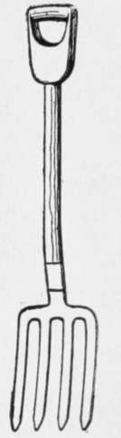
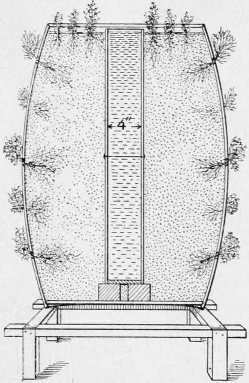

Culinary Herbs
Description
This section is from the book "Culinary Herbs", by M. G. Kains. Also available from Amazon: Culinary Herbs, Their Cultivation, Harvesting, Curing and Uses.
Culinary Herbs
In these days of jaded appetites, condiments and canned goods, how fondly we turn from the dreary monotony of the "dainty" menu to the memory of the satisfying dishes of our mothers! What made us, like Oliver Twist, ask for more? Were those flavors real, or was it association and natural, youthful hunger that enticed us? Can we ever forget them; or, what is more practical, can we again realize them? We may find the secret and the answer in mother's garden. Let's peep in.
The garden, as in memory we view it, is not remarkable except for its neatness and perhaps the mixing of flowers, fruits and vegetables as we never see them jumbled on the table. Strawberries and onions, carrots and currants, potatoes and poppies, apples and sweet corn and many other as strange comrades, all grow together in mother's garden in the utmost harmony.
All these are familiar friends; but what are those plants near the kitchen? They are "mother's sweet herbs." We have never seen them on the table. They never played leading roles such as those of the cabbage and the potato. They are merely members of "the cast" which performed the small but important parts in the production of the pleasing tout ensemble soup, stew, sauce, or salad-the remembrance of which, like that of a well-staged and well-acted drama, lingers in the memory long after the actors are forgotten.
Spading Fork
Probably no culinary plants have during the last 50 years been so neglected. Especially during the "ready-to-serve" food campaign of the closed quarter century did they suffer most. But they are again coming into their own. Few plants are so easily cultivated and prepared for use. With the exception of the onion, none may be so effectively employed and none may so completely transform the "left-over" as to tempt an otherwise balky appetite to indulge in a second serving without being urged to perform the homely duty of "eating it to save it." Indeed, sweet herbs are, or should be, the boon of the housewife, since they make for both pleasure and economy. The soup may be made of the most wholesome, nutritious and even costly materials; the fish may be boiled or baked to perfection; the joint or the roast and the salad may be otherwise faultless, but if they lack flavor they will surely fail in their mission, and none of the neighbors will plot to steal the cook, as they otherwise might did she merit the reputation that she otherwise might, by using culinary herbs.
Barrel Culture of Herbs
This doleful condition may be prevented and the cook enjoy an enviable esteem by the judicious use of herbs, singly or in combination. It is greatly to be regretted that the uses of these humble plants, which seem to fall lower than the dignity of the title "vegetable," should be so little understood by intelligent American housewives.
In the flavoring of prepared dishes we Americans- people, as the French say, "of one sauce"-might well learn a lesson from the example of the English matron who usually considers her kitchen incomplete without a dozen or more sweet herbs, either powdered, or in decoction, or preserved in both ways. A glance into a French or a German culinary department would probably show more than a score; but a careful search in an American kitchen would rarely reveal as many as half a dozen, and in the great majority probably only parsley and sage would be brought to light. Yet these humble plants possess the power of rendering even unpalatable and insipid dishes piquant and appetizing, and this, too, at a surprisingly low cost. Indeed, most of them may be grown in an out-of-the-way corner of the garden, or if no garden be available, in a box of soil upon a sunny window sill-a method adopted by many foreigners living in tenement houses in New York and Jersey City. Certainly they may be made to add to the pleasure of living and, as Solomon declares, "better is a dinner of herbs where love is. than a stalled ox with contention."
It is to be regretted that the moving picture show and the soda water fountain have such an influence in breaking up old-fashioned family evenings at home when everyone gathered around the evening lamp to enjoy homemade dainties. In those good old days the young man was expected to become acquainted with the young woman in the home. The girl took pride in serving solid and liquid culinary goodies of her own construction. Her mother, her all-sufficient guide, mapped out the sure, safe, and orthodox highway to a man's heart and saw to it that she learned how to play her cards with skill and precision. Those were the days when a larger proportion "lived happy ever after" than in modern times, when recreation and refreshment are sought more frequently outside than inside the walls of home.
But it is not too late to learn the good old ways over again and enjoy the good old culinary dainties. Whoever relishes the summer cups that cheer but do not inebriate may add considerably to his enjoyment by using some of the sweet herbs. Spearmint adds to lemonade the pleasing pungency it as readily imparts to a less harmful but more notorious beverage. The blue or pink flowers of borage have long been famous for the same purpose, though they are perhaps oftener added to a mixture of honey and water, to grape juice, raspberry vinegar or strawberry acid. All that is needed is an awakened desire to re-establish home comforts and customs, then a little later experimentation will soon fix the herb habit.
The list of home confections may be very pleasingly extended by candying the aromatic roots of lovage, and thus raising up a rival to the candied ginger said to be imported from the Orient. If anyone likes coriander and caraway-I confess that I don't-he can sugar the seeds to make those little "comfits," the candies of our childhood which our mothers tried to make us think we liked to crunch either separately or sprinkled on our birthday cakes. Those were before the days when somebody's name was "stamped on every piece" to aid digestion. Can we ever forget the picnic when we had certain kinds of sandwiches? Our mothers minced sweet fennel, the tender leaves of sage, marjoram or several other herbs, mixed them with cream, cheese, and spread a layer between two thin slices of bread. Perhaps it was the swimming-, or the three-legged racing, or the swinging, or all put together, that put a razor edge on our appetites and made us relish those sandwiches more than was perhaps polite: but will we not. all of us who ate them, stand ready to dispute with all comers that it was the flavors that made us forget "our manners":
But sweet herbs may be made to serve another pleasing, an aesthetic purpose. Many of them may be used for ornament. A bouquet of the pale pink blossoms of thyme and the delicate flowers of marjoram, the fragrant sprigs of lemon balm mixed with the bright yellow umbels of sweet fennel, the finely divided leaves of rue and the long glassy ones of bergamot, is not only novel in appearance but in odor. In sweetness it excels even sweet peas and roses. Mixed with the brilliant red berries of barberry and multi-flora rose, and the dark-green branches of the hardy thyme, which continues fresh and sweet through the year. a handsome and lasting bouquet may be made for a midwinter table decoration, a fragrant reminder of Shakespeare's lines in "A Winters Tale":
"Here's flowers for you; Hot lavender, mints, savory, marjoram; The mangold, that goes to bed wi' the sun And with him rises weeping.
Transplanting Board and Dibble
The rare aroma of sweet marjoram reminds so many city people of their mother's and their grandmother's country gardens, that countless muslin bags of the dried leaves sent to town ostensibly for stuffing poultry never reach the kitchen at all, but are accorded more honored places in the living room. They are placed in the sunlight of a bay window where Old Sol may coax forth their prisoned odors and perfume the air with memories of childhood summers on the farm.
Other memories cling to the delicate little lavender, not so much because the owner of a well-filled linen closet perfumed her spotless hoard with its fragrant flowers, but because of more tender remembrances. Would any country wedding chest be complete without its little silk bags filled with dried lavender buds and blooms to add the finishing touch of romance to the dainty trousseau of linen and lace? What can recall the bridal year so surely as this same kindly lavender?
Continue to:
- prev: Preface
- Table of Contents
- next: A Dinner Of Herbs